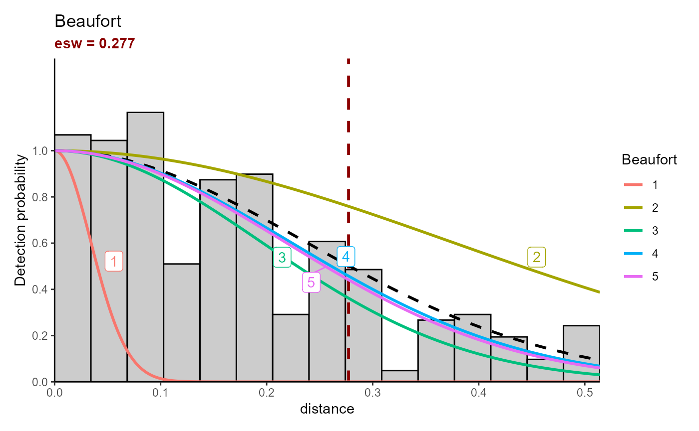
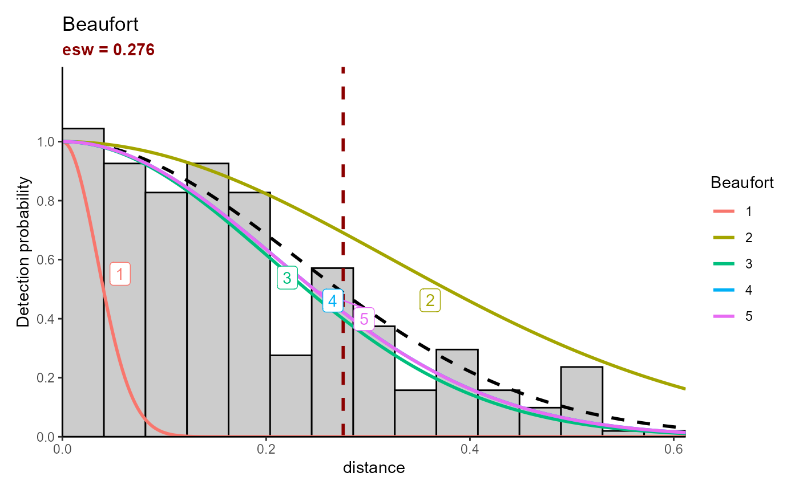

ESW calculation
esw-calculation.Rmd
library(pelascope)
#> Warning: replacing previous import 'Distance::create.bins' by
#> 'mrds::create.bins' when loading 'pelaCDS'
#> Warning: replacing previous import 'magrittr::set_names' by 'purrr::set_names'
#> when loading 'pelascope'calc_esw
calc_esw(data_sight = pelascope::Sigthings_with_SegID,
data_effort = pelascope::data_effort_with_sightings,
species = "DELDEL",
variable = c("Beaufort", "plateform"),
key = "hn")
#>
#> ── Data cleaning ──
#>
#> There is 349 sightings in the dataset selected.
#>
#> ── Model selection ──
#>
#> Fitting half-normal key function
#> AIC= -560.4
#> Fitting half-normal key function
#> AIC= -552.316
#> Fitting half-normal key function
#> AIC= -560.748
#> ── Best model prediction ──
#>
#> Fitting half-normal key function
#> AIC= -560.748
#>
#> ── Update Effort Table ──
#>
#> $plot_esw
#>
#> $data_esw
#> Beaufort mean sd Q_25 Q_97
#> 1 1 0.06614161 0.06883743 0.006286976 0.2623815
#> 2 2 0.33892077 0.16451570 0.030710945 0.5135235
#> 3 3 0.26271919 0.17004731 0.016362378 0.5115924
#> 4 4 0.27617260 0.17150098 0.019228225 0.5124844
#> 5 5 0.26840854 0.16964065 0.017402735 0.5124357
#>
#> $model_selection
#> model AIC det_fun
#> 1 1 + Beaufort -560.7477 hn
#> 2 1 + Beaufort + plateform -560.4003 hn
#> 3 1 + plateform -552.3156 hn
#>
#> $effort_output
#> Simple feature collection with 439 features and 16 fields
#> Geometry type: POINT
#> Dimension: XY
#> Bounding box: xmin: -5.657199 ymin: 43.66589 xmax: -1.23514 ymax: 48.31294
#> Geodetic CRS: WGS 84
#> # A tibble: 439 × 17
#> Beaufort TransectID plateform n_obs LegID Start_time
#> <fct> <chr> <fct> <dbl> <chr> <dttm>
#> 1 1 TR_Pelgas_04052023 bridge_inside 2 04052023… 2023-05-04 11:42:53
#> 2 1 TR_Pelgas_04052023 bridge_inside 2 04052023… 2023-05-04 11:42:53
#> 3 1 TR_Pelgas_05052023 bridge_inside 2 05052023… 2023-05-05 13:56:44
#> 4 1 TR_Pelgas_05052023 bridge_inside 2 05052023… 2023-05-05 13:56:44
#> 5 1 TR_Pelgas_05052023 bridge_inside 2 05052023… 2023-05-05 13:56:44
#> 6 1 TR_Pelgas_05052023 bridge_inside 2 05052023… 2023-05-05 13:56:44
#> 7 1 TR_Pelgas_18052023 bridge_inside 2 18052023… 2023-05-18 13:00:34
#> 8 1 TR_Pelgas_22052023 bridge_inside 2 22052023… 2023-05-22 15:03:10
#> 9 1 TR_Pelgas_27052023 bridge_inside 2 27052023… 2023-05-27 13:24:10
#> 10 2 TR_Pelgas_01052023 bridge_inside 2 01052023… 2023-05-01 06:56:56
#> # ℹ 429 more rows
#> # ℹ 11 more variables: DateTime <dttm>, End_time <dttm>, SegID <chr>,
#> # Effort <dbl>, geometry <POINT [°]>, det.DELDEL <dbl>, ind.DELDEL <dbl>,
#> # mean_esw_DELDEL <dbl>, sd_esw_DELDEL <dbl>, Q25_esw_DELDEL <dbl>,
#> # Q75_esw_DELDEL <dbl>
calc_esw(data_sight = pelascope::Sigthings_with_SegID,
data_effort = pelascope::data_effort_with_sightings,
species = c("DELDEL", "DELSPP") ,
variable = c("Beaufort", "plateform"),
key = "hn")
#>
#> ── Data cleaning ──
#>
#> There is 362 sightings in the dataset selected.
#>
#> ── Model selection ──
#>
#> Fitting half-normal key function
#> AIC= -544.38
#> Fitting half-normal key function
#> AIC= -535.129
#> Fitting half-normal key function
#> AIC= -544.65
#> ── Best model prediction ──
#>
#> Fitting half-normal key function
#> AIC= -544.65
#>
#> ── Update Effort Table ──
#>
#> $plot_esw
#>
#> $data_esw
#> Beaufort mean sd Q_25 Q_97
#> 1 1 0.06659251 0.07192347 0.005668289 0.2684590
#> 2 2 0.35197191 0.20495185 0.025410945 0.6104294
#> 3 3 0.29705535 0.20458378 0.016209545 0.6082239
#> 4 4 0.29286272 0.20417632 0.015007309 0.6073901
#> 5 5 0.28602000 0.20430147 0.017002836 0.6079224
#>
#> $model_selection
#> model AIC det_fun
#> 1 1 + Beaufort -544.6504 hn
#> 2 1 + Beaufort + plateform -544.3795 hn
#> 3 1 + plateform -535.1288 hn
#>
#> $effort_output
#> Simple feature collection with 439 features and 20 fields
#> Geometry type: POINT
#> Dimension: XY
#> Bounding box: xmin: -5.657199 ymin: 43.66589 xmax: -1.23514 ymax: 48.31294
#> Geodetic CRS: WGS 84
#> # A tibble: 439 × 21
#> Beaufort TransectID plateform n_obs LegID Start_time
#> <fct> <chr> <fct> <dbl> <chr> <dttm>
#> 1 1 TR_Pelgas_04052023 bridge_inside 2 04052023… 2023-05-04 11:42:53
#> 2 1 TR_Pelgas_04052023 bridge_inside 2 04052023… 2023-05-04 11:42:53
#> 3 1 TR_Pelgas_05052023 bridge_inside 2 05052023… 2023-05-05 13:56:44
#> 4 1 TR_Pelgas_05052023 bridge_inside 2 05052023… 2023-05-05 13:56:44
#> 5 1 TR_Pelgas_05052023 bridge_inside 2 05052023… 2023-05-05 13:56:44
#> 6 1 TR_Pelgas_05052023 bridge_inside 2 05052023… 2023-05-05 13:56:44
#> 7 1 TR_Pelgas_18052023 bridge_inside 2 18052023… 2023-05-18 13:00:34
#> 8 1 TR_Pelgas_22052023 bridge_inside 2 22052023… 2023-05-22 15:03:10
#> 9 1 TR_Pelgas_27052023 bridge_inside 2 27052023… 2023-05-27 13:24:10
#> 10 2 TR_Pelgas_01052023 bridge_inside 2 01052023… 2023-05-01 06:56:56
#> # ℹ 429 more rows
#> # ℹ 15 more variables: DateTime <dttm>, End_time <dttm>, SegID <chr>,
#> # Effort <dbl>, geometry <POINT [°]>, det.DELDEL <int>, ind.DELDEL <int>,
#> # det.DELSPP <int>, ind.DELSPP <int>, ind.DELDEL_DELSPP <dbl>,
#> # det.DELDEL_DELSPP <dbl>, mean_esw_DELDEL_DELSPP <dbl>,
#> # sd_esw_DELDEL_DELSPP <dbl>, Q25_esw_DELDEL_DELSPP <dbl>,
#> # Q75_esw_DELDEL_DELSPP <dbl>